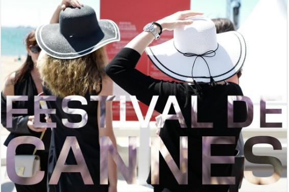

Kanski filmski festival (koji je bio zvan "Internacioni filmski festival" sve do 2002 godine) je godišnji filmski festival koji se održava u Kanu,Francuska. Na njemu se prikazuju novi filmovi iz svih žanrova uključujući dokumentarce iz svih krajeva sveta. Osnovan 1946, samo uz pozivnice, festival se održava godišnje (uglavnom u maju) na Palais des Festivals et des Congrès(Palata festivala i konferencije).
Sud je odlučio:Don Kihot će biti prikazan na zatbaranju 71. Kanskog festivala.
Stvari se dobro odvijaju za film Terija Gilijama,Čovek koji je ubio Don Kihota. Juče, u sredu 9.maja 2018 Francuski sud je odbacio zahtev Paola Branka...